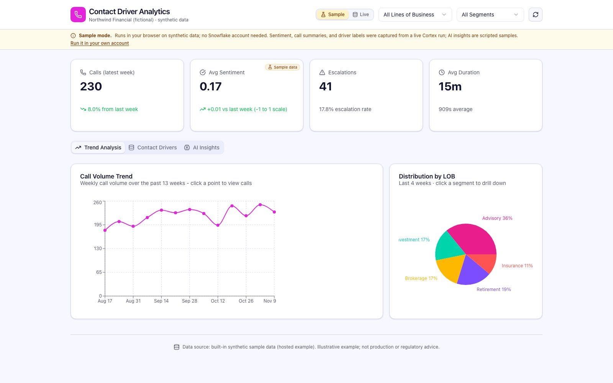
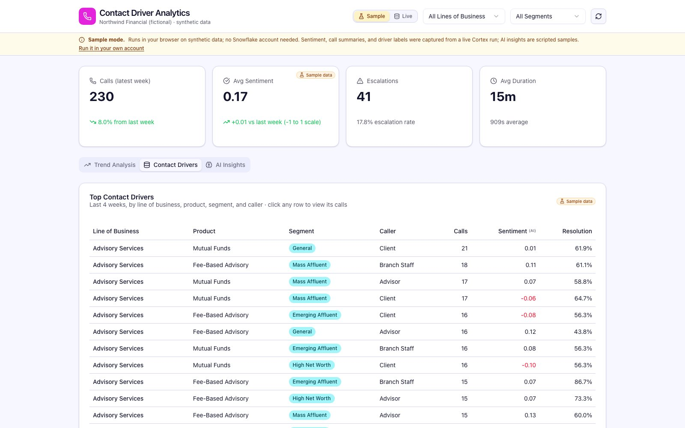
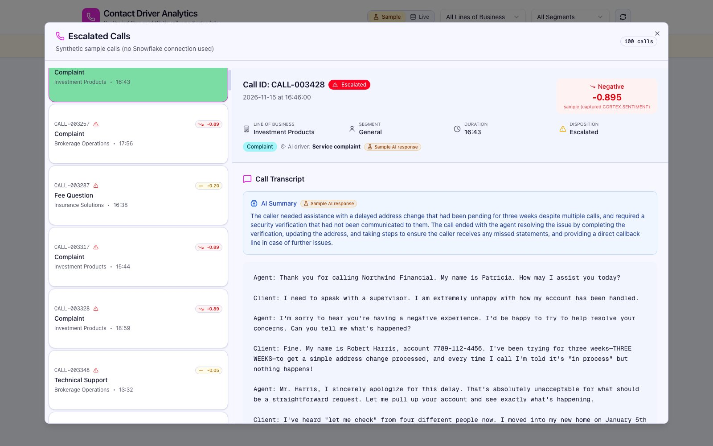
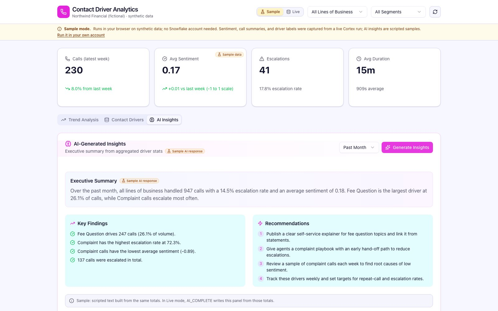
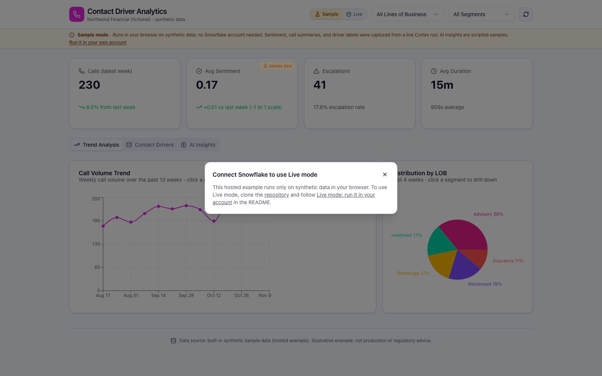

Find what's driving repeat calls and escalations
A contact-center leader at Northwind Financial, a fictional firm, sees escalations creeping up but can't tell why. Call reasons, sentiment, and outcomes sit in different places. This example brings them together: a dashboard of weekly volume, sentiment, and escalations by line of business, product, segment, and call reason; a drill-down into individual calls with an AI summary; and an AI-drafted executive summary with recommendations. It helps a team spot which drivers to fix first.
At a glance
The hosted example and npm run dev run in Sample mode on bundled synthetic data. Simulated AI output is labeled "Sample AI response".
Any Snowflake edition, a role that can create a role, warehouse, and database, and Cortex AI functions in your region or through cross-region inference. Node.js 20.9+.
Measured time to run sql/setup.sql on an XSMALL warehouse. Each live AI Insights call took 10 to 16 seconds.
Warehouse credits measured for a full test session (two setup runs and about an hour of app use), plus an estimated few hundredths of a credit in Cortex tokens. Cleanup removes everything.
Walkthrough
Screenshots of the running app in Sample mode. On this synthetic data set, Fee Question calls grow from 8.9% to 26.5% of weekly calls over the quarter, and Complaint calls escalate 72.3% of the time in the past month.

V_TREND_SUMMARY view; the line-of-business split comes from V_CALL_DRIVER_ANALYSIS. Sentiment is a per-transcript score from SNOWFLAKE.CORTEX.SENTIMENT. Every card, chart point, and slice opens the matching calls.
V_CALL_DRIVER_ANALYSIS. Click a row to see its calls.
sql/setup.sql. Sample mode shows outputs captured from a live run, labeled as samples.
llama3.3-70b, structured output) writes the summary, findings, and recommendations from aggregated totals by line of business and call reason, and the panel reports the measured latency. This screenshot is Sample mode: a scripted response built from the same totals, labeled "Sample AI response".
.env.local, the app defaults to Live and shows any Snowflake error instead of falling back to sample data.How it works
| Step | What happens | Snowflake capability |
|---|---|---|
| Generate | Setup creates 2,857 synthetic calls over 13 weeks from 10 fictional transcripts. A seeded hash makes the numbers identical on every run and identical to Sample mode. | SQL UDFs, GENERATOR |
| Enrich | Each transcript gets a sentiment score, a two-sentence summary, and a contact-driver label, stored in TRANSCRIPT_AI and joined into CALL_TRANSCRIPTS. | SNOWFLAKE.CORTEX.SENTIMENT, AI_COMPLETE, AI_CLASSIFY |
| Aggregate | Two views roll calls up by week and by line of business, product, segment, and caller type. | Views |
| Explain | On demand, the app totals the selected window and asks the model for a summary, findings, and recommendations in a fixed JSON shape. Request values are bind variables. | AI_COMPLETE with response_format |
| Secure | The app connects as a read-only role with key-pair authentication; credentials never go to the browser. | Role-based access, SNOWFLAKE.CORTEX_USER |
Docs: SENTIMENT · AI_CLASSIFY · AI_COMPLETE · AI_COMPLETE structured outputs · Cross-region inference
Run it
No account
git clone https://github.com/sfc-gh-ooral/sfguide-contact-driver-analytics.git
cd sfguide-contact-driver-analytics
npm install
npm run devIn your Snowflake account
- Run
sql/setup.sqltop to bottom in a Snowsight worksheet. It createsCONTACT_DRIVER_EXAMPLE, an XSMALL warehouseCONTACT_DRIVER_WH, and a read-only roleCONTACT_DRIVER_ROLE, and changes nothing that already exists. - Register a key pair on your user, copy
.env.exampleto.env.local, and fill in your account, user, and key path. - Run
npm run dev. The header switch defaults to Live. - When you're done, run
sql/cleanup.sqlto drop the database, warehouse, and role.
Full steps, the objects created, measured cost, and known limitations are in the README.